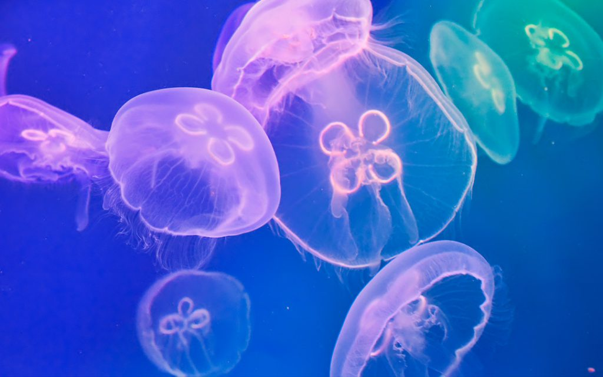

Medusa luna
La medusa luna, también conocida como medusa común, es una especie de medusa de la clase Scyphozoa.
Alimentacion: La medusa luna se alimenta principalmente de plancton, pequeños crustáceos y larvas de peces.
Habitat: La medusa luna se encuentra en todos los mares del mundo, excepto en las zonas muy frías de los polos. Prefiere aguas costeras y oceánicas.
Tamaño: La medusa luna puede medir hasta 30 cm de diámetro.
Categorías de riesgo: Preocupación menor